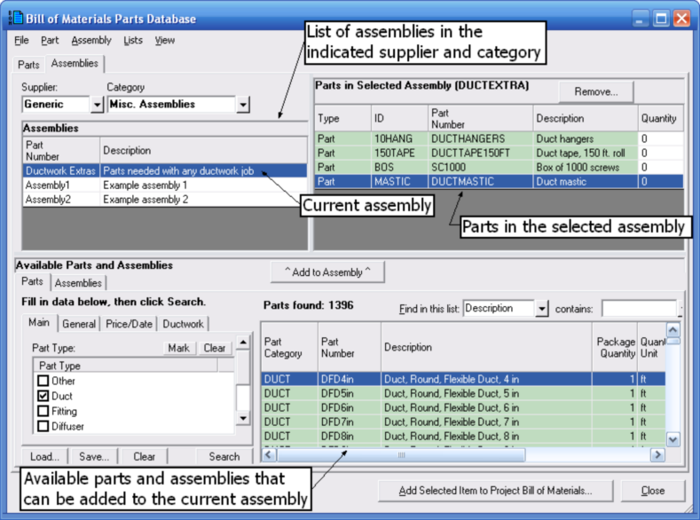
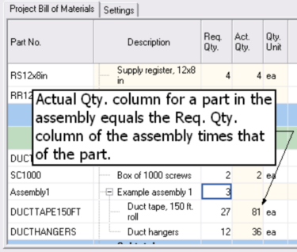
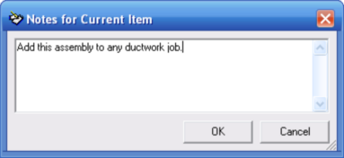
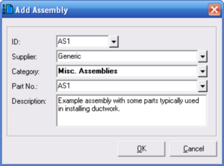

Working with Assemblies (Bill of Materials Parts Database Window) |
  
|
Working with Assemblies (Bill of Materials Parts Database Window) |
|
See also: Adding a new assembly to the database.
On the Bill of Materials Parts Database window, click the Assemblies tab, pictured below, to manage your assemblies and to add assemblies to the project bill of materials.

Assemblies List: The list in the upper left corner of this window shows all of the assemblies that have been added to the current supplier and category. To see the assemblies in other suppliers and categories, change the Supplier and Category inputs.
Current Assembly: The current assembly is the one in the list that is highlighted in blue. In the above picture, the "Ductwork Extras" assembly is selected.
Parts in Selected Assembly: Shows the parts that have been added to the selected assembly. You can either fill in numbers in the Quantity column on the right or leave them at zero and fill in the appropriate quantities on the Project Bill of Materials window once you have added the assembly to the current project.
Available Parts and Assemblies: The bottom half of this window shows the parts and assemblies that you can add to the current assembly. You can query the database and use the Find in this list input just as you do on the main Parts tab of this window.
^ Add to Assembly ^: Clicking this button adds the part or assembly selected in the bottom half of this window to the "Parts in Selected Assembly" list in the upper right of this window. If the part or assembly you select already exists in the list, its quantity will be increased by one. If you add an assembly (instead of a part) to an assembly, the assembly you added becomes "nested" within the other one, which means that all of the parts contained within the added assembly will also be included when you add the current assembly to the project bill of materials. But be careful not to create a circular reference, where a nested assembly includes the current assembly in its list of parts.
Add Selected Item to Project Bill of Materials: Displays a popup menu that lets you choose the section in the project bill of materials to which the current assembly will be added.
After you add an assembly to the project bill of materials, you can adjust the quantities as shown in the following picture. Notice that the actual quantity of individual parts in the assembly equals the Req. Qty. value of the assembly times that of the individual part. If you have any nested assemblies within an assembly, the actual quantity will be equal to the Req. Qty. of the part times that of each of its parent assemblies.

Notes for Current Assembly: To add notes for an assembly, click the menu "Assembly | Notes for Current Assembly." The "Notes for Current Item" dialog will open, as shown below.

OK: Saves your notes to the assembly and closes this dialog.
Cancel: Closes this dialog without saving your changes.
Adding a new assembly to the database
To add a new assembly to your database, click the menu "Assembly | Add New Assembly to Database." That will open the Add Assembly dialog, pictured below.

ID: Enter a short, unique ID for this assembly. Once the assembly is added to the database, you cannot change the ID.
Supplier: Select the appropriate supplier from the dropdown list.
Category: Select the appropriate category from the dropdown list.
Part No.: Enter a part number for this item. You can enter any kind of part number you want, such as a model number or a number you will use when ordering the item from a supplier. You can use any characters you want.
Description: Enter a description of the assembly so that you will be able to recognize it in the list. You may want to give an overview of the kinds of parts you will be adding to the assembly.